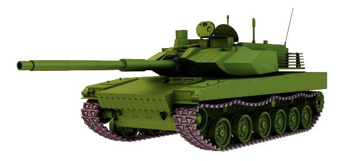
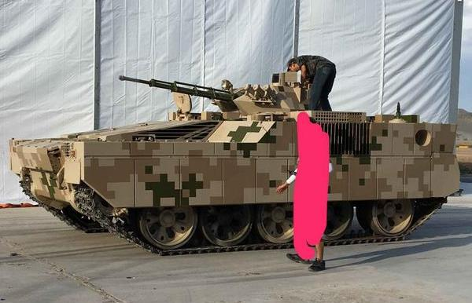
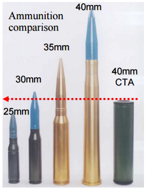
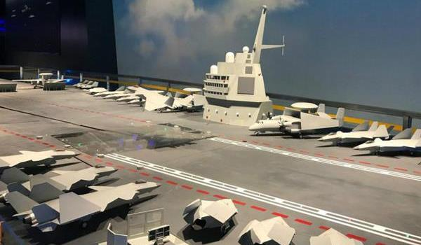
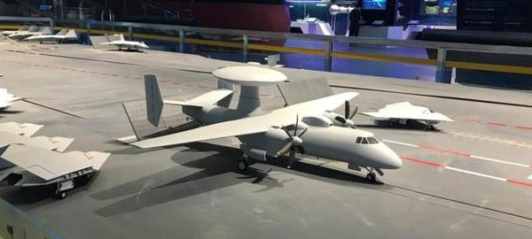
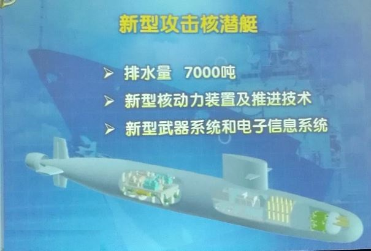
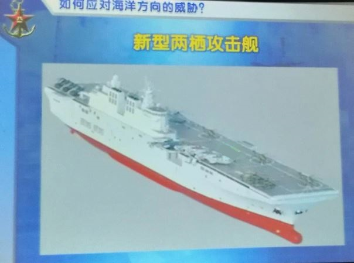
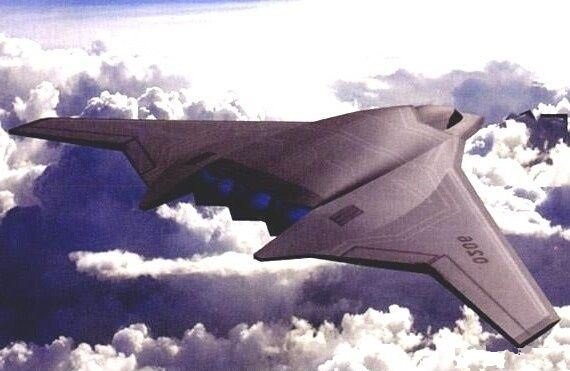

2017-08-23 05:01:00
21年前李登輝故意挑釁中共的時候，國軍在裝備的性能上還有明顯的優勢，這是一般軍迷都知道的事實。比較少為人知的是當時共軍裝備性能最落後的軍種，既不是空軍也不是海軍，而是陸軍。那時的中共陸軍不但還沒有完成機械化，連主戰坦克都還停留在50年代的水平，就算能成功渡海，也不是改裝了美軍70年代電子射控系統的國軍坦克的對手。在軍改初有成效的今日，再重新評估中共陸軍的作戰能力，則已經遠不只是“非昔日吳下阿蒙”。
50+噸級的99A式在換裝最新的第四代APFSDS（翼穩脫殼穿甲）彈之後，性能已經全面趕上60+噸的M1A2SEP，在若干細節（如航程和自衛系統）上還有超越，至於Leopard 2和Leclerc，那根本就只能哄騙中東的土豪。40+噸級的96B式是為大量生產而優化的，以價格低廉為最重要指標，但是在性能上仍然全面壓倒國軍的任何一型坦克。剛定型的30+噸級15式，曾被稱爲新輕坦；其實它在用途上和傳統的輕型坦克完全不同，不是為了偵察而設計的輔助性車輛，而是一款真正的主戰坦克（Main Battle Tank），只不過是針對機動性來進行優化，特別適合山地、丘陵、叢林和海島作戰。它的假想對手是40+噸級的俄製和美系坦克，例如印度/越南的T90S和國軍的M60/M48改裝版。要以輕了10噸的重量來達到不弱於對手的火力和防護，在技術上必須有一個近乎完整的代差。15式的確應用了目前世界最先進的坦克技術，可以説是在下一代（應該是雙人制、無人炮塔設計）坦克出現之前，二戰後第三代坦克的終極版。

15式主戰坦克；雖然采用105毫米炮，因爲彈藥先進，穿透力反而超過T90S的125毫米主炮
上周Norinco（北方工業）開了一場外銷型裝甲與反裝甲展示會。在坦克方面，和内銷的一樣，也是依重量高低有VT4、VT2和VT5三級。然而它們既不是共軍競標落選的型號，也不是自用型的簡化版，而是專爲外銷，采用貨架現有零件全新設計而成。換句話説，中共對現代裝甲技術，尤其是最關鍵的高功率柴油機、傳動系統和電子觀瞄設備，已經完全掌握，可以像生產手機一樣隨心所欲地組裝。而美國現在連開發新的地面戰鬥車輛，都動輒用上10年、15年，還只能保證會超重並超支，多半不能定型，如此强烈的反差，令人唏噓。
Norinco還展示了好幾型的新式步戰車（IFV，Infantry Fighting Vehicle）。因爲它們都是外銷用的，我就不詳細一一介紹。不過其中有一個很有意思，它不是新造的型號，而是一個改裝套件，把59式（仿製自蘇聯T54，即本文第一段提到的50年代水準的主戰坦克）車尾改成車頭，原車頭的裝甲拆除，改裝車尾門，炮塔則換裝為30毫米口徑。T54/59式系列是二戰後全世界生產數量最多的坦克，現在已經嚴重過時，能廢物利用是個很聰明的主意。這原本是以色列軍工企業的發明，現在Norinco也來搶生意了。

59式頭尾互換後的“新”產品
共軍自用的新式步戰車還在測試之中，應該不久之後就會定型量產。目前有照片顯示它比現役的04A要厚實得多，是30+噸級的設計。這符合最新的世界潮流，亦即步戰車的防護水平大幅提升至接近坦克的水準，以便能更安全地緊隨主戰坦克進行高速突擊（外銷型則是為了在中東城市戰裏承受步兵反裝甲武器的打擊）。美軍仍然只有鋁裝甲的Bradley步戰車，面對中口徑炮火時極爲脆弱。共軍在建軍紀念展中，展示了一型新式的40毫米埋頭彈火炮，很可能會用在這輛新步戰車上，它可以輕易地摧毀Bradley或甚至國軍的二綫坦克。
我想一般讀者大概還沒有聽説過埋頭彈（CTA，Cased Telescoped Ammunition），所以這裏簡單解釋一下。埋頭彈指的是它的彈丸從彈藥結構的前端後移到被埋進發射藥筒裏，整體變成一個粗短的圓柱形。這原本是英法合作的一個項目，法國退出之後，英國人花了14年才終於大功告成，目前正準備用在英軍下一代的Ajax步戰車上。很多軍迷讀了英國人的廣告文章，以爲這型新的40毫米火炮比舊有的30和35毫米炮要輕巧，初速反而更高，是受埋頭彈之賜，但這是一個忽悠。其實它性能的改進，主要來自過去4、50年（上一代的中口徑火炮是60和70年代的產品）冶金技術的進步；使用埋頭彈的唯一好處，是彈丸的長度減半，寬度雖然增加但不多。現代的新式步戰車一般使用遙控炮塔，以便空出地方來搭載更多步兵。埋頭彈更容易塞進緊凑的彈鼓之中，所以適合搭配步戰車使用。現在共軍後來居上，很可能早於英國裝備這項新技術。

40毫米埋頭彈（最右）與傳統中口徑彈藥尺寸對比
中共陸軍近年的改進，除了機械化和信息化已大致完成之外，還有立體化仍在初始階段。這次軍改運用數百架（800？）直升機，組建了15個陸航/空中突擊旅（空突旅是陸航旅加上一個内建的步兵營）。這在中型區域衝突裏基本夠用，但是如果要全球部署/用兵，就必須追隨美軍的建制，那麽就還要成長3-5倍。目前制約這個發展的，仍然是中共的渦軸發動機技術。不過這方面的進步似乎稍微好於渦扇發動機，可能在5年内就能隨WZ-10的批量生產而解決。
在海軍方面，017號航母仍然在舾裝之中，據稱進度稍微超前，所以年底前試航應該沒有疑慮。已經有宣佈，它的型號正式改爲002型。至於下一艘彈射型航母，最近的一連串消息基本已經確定要放棄蒸汽彈射，改為電磁彈射。其實更準確的説法是原本計劃的蒸汽彈射航母被取消了，直接上馬下一階段的型號。這是因爲大家早先討論的018號，是2011年立項，原定2016年開工。電磁彈射器一直到去年才定型，所以根本不可能臨時更改。所有有點常識的評論者，包括我在内，都一再强調立項五年之後才做如此重大的更動是不切實際的。我們沒有預期到的是，中央軍委居然從戰略層次，判斷不須要在2023年就有第三艘航母服役（很可能是因爲Trump的當選，使中國的戰略機遇期大幅延展），可以多等4-5年，那麽就自然可以跳過蒸汽彈射器和與其配套的戰機，長期下來將節省很多維護經費。
我想這個新的戰略決定，任何一個軍迷都不可能只依理性分析而預期到。但是負負得正，它的結果是有常識的人判斷錯誤，無知的反而誤打誤撞猜對了。這種情況其實並不罕見，假設一個專家的預測有九成的勝率（已經非常非常了不起了），那麽十次中仍然會有一次輸給猴子的案例，然而這並不代表那隻猴子更有智慧。我的遺憾在於《超大》的大貓似乎因為被猴群奚落而銷聲匿跡，結果是過去兩三個月整個海版沒有任何一篇有價值的新消息可讀。
前面提到的建軍紀念展中，也展示了一艘核子動力電磁彈射的航母模型，其上有三種艦載機：首先是前文提過的預警機，型號已知是空警600。其次是一架隱身飛翼無人機，最近有衛星照片顯示一架形似的飛翼正在試飛基地接受鑒定。最後則是海軍版的J-20。雖然海軍選擇J-20在邏輯上是必然的結果，有一些細節仍然值得解釋。J-20各項性能都遠優於FC-31，價錢基本相當，修改為海軍型也更容易些（因爲鴨翼佈局的低速大迎角可控性極佳，特別適合在航母上降落），但是海軍一直拖到現在才間接表態，以致過去幾年始終沒有内綫消息可以讓猴群噤聲。其實我們若是從海軍的觀點來看，完全可以理解：FC-31是廠商自己出錢研發的，雖然是鷄肋，但是J-20研發失敗的風險總是有的，既然不須出錢就可以有一個備份，何樂而不爲？現在J-20已經在空軍服役，證實是極優秀的飛機，而瀋飛連J-15的飛控都沒能搞好，已經害海軍損失了一名艦載機飛行員，即使FC-31現在就可以交機，海軍也不會有興趣了。

航母模型上的J-20，有摺叠機翼

航母模型上的KJ600
上周有一位退役海軍裝備部官員給演講，透露了幾個新消息。我覺得最重要的有兩點：第一是095級的排水量為7000噸，並且如同Virginia Class一樣使用泵推而不是一般的螺旋槳。其次是證實了共軍正在利用常規潛艇（應該是039B/C）的艇殼研發小型核動力潛艇（排水量約3000噸）。我在兩年多前曾提過，因爲095級的性能（主要是靜音航速）仍然趕不上Virginia Class，共軍可以利用在西太平洋的守勢優勢，建造大批廉價的小型核動力潛艇到處佈樁，以逸待勞，以量取勝。

095級是這個樣子

075級是這個樣子
提到潛艇，去年十月，中國科學院上海微系統與信息技術研究所發表了一篇論文，叫做《Development of a squid-based airborne full tensor gradiometers for geophysical exploration》（參見http://library.seg.org/doi/pdf/10.1190/segam2016-13947186.1 ），中文翻譯是《基於魷魚的機載全張量梯度計，用於地質物理探勘》。看不懂吧？其實他們應該把“squid”寫成“SQUID”才對，因爲這裏它是Superconducting QUantum Interference Device的簡寫，正確的翻譯是“超導量子干涉儀”，這是目前遠遠最為靈敏的磁場測量儀器，你如果到醫院裏做核磁共振檢查，機器裏用的就是SQUID。我們先忽略論文標題裏的“地質物理探勘”那部分，一個機載的磁力計有什麽軍事用途呢？那當然是可以用來探測潛艇的。好，既然SQUID遠優於傳統的磁力計，那麽現代的反潛機一定都用得上吧？這裏其實有個很大的問題，就是SQUID太靈敏了，各式各樣的雜訊太多，工程上始終無法實用化。一個解決的辦法，就是類似相控陣雷達天綫，也把接收器組成一個陣列（不過這裏可能是三維陣列），然後用軟件對信號篩選、定向。在這個應用上，“張量”和“陣列”是同一個意思。
總之，這篇論文説的是，上海所已經解決了把超導量子干涉儀用在飛機上做“地質物理探勘”的工程問題。目前世界上所有反潛機所裝備的磁力計都頂多只有幾百公尺的探測範圍，這對搜索潛艇來説，基本沒用。必須先由聲納監聽到目標的大致位置，然後才能用磁力計精確定位。一個實用化的SQUID磁力計會有大約5-10公里的探測範圍，而且不論潛艇有多安靜，就算停俥，一樣無法遁形。目標甚至被偵測到了，都不會有自覺，只有在反潛魚雷掉到頭上，主動聲納在幾百公尺（不到一分鐘的魚雷航程）外開始砰砰作響，才會知道大事不妙。
本季講了很多陸軍和海軍的事，空軍就簡單交代一下：最近有傳言說H-20會是半飛翼，三發動機的設計。如果屬實，我是有點失望的。一方面全飛翼的隱身性更好；另一方面，三發動機代表H-20會小於B-2，那麽在航程和載彈量上都會略遜。不過話説回來，共軍不像美軍一樣到處都有海空基地，所以希望轟炸機飛越半個地球做戰略性核子打擊，原本就不太切實際。H-20可能定位和B-21類似，都是戰役級的常規打擊手段。

最近傳説中的H-20，似乎是這個樣子
【後註】我寫正文時忘了提，共軍的第五艘Zubr已經上了船臺。它的重要性在於它是第一艘自製的Zubr，一旦成功，則共軍基本可以無限建造下去。兩年前，我已經解釋過，Zubr的航程太短，基本只適合臺海。它的批量建造，是對臺灣有針對性的軍事建設。